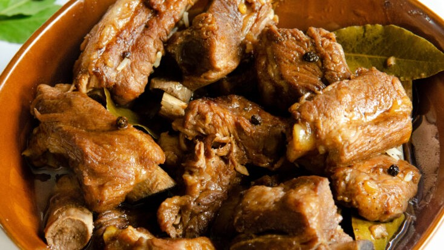

The Philippines, officially the Republic of the Philippines (Filipino: Republika ng Pilipinas), is an archipelagic country in Southeast Asia. It is situated in the western Pacific Ocean, and consists of about 7,640 islands, that are broadly categorized under three main geographical divisions from north to south: Luzon, Visayas, and Mindanao.
The Philippines is bounded by the South China Sea to the west, the Philippine Sea to the east, and the Celebes Sea to the southwest, and shares maritime borders with Taiwan to the north, Japan to the northeast, Palau to the east and southeast, Indonesia to the south, Malaysia and Brunei to the southwest, Vietnam to the west, and China to the northwest. The Philippines covers an area of 300,000 km2 (120,000 sq mi) and, as of 2020, had a population of around 109 million people, making it the world's twelfth-most populous country. The Philippines is a multinational state, with diverse ethnicities and cultures throughout its islands. Manila is the nation's capital, while the largest city is Quezon City, both lying within the urban area of Metro Manila.
Some 50 million years ago, the archipelago was formed by volcanic eruptions. About 30,000 years ago the earliest inhabitants had arrived from the Asian mainland, perhaps over land bridges built during the ice ages. By the tenth century A.D. coastal villagers welcomed Chinese commerce and settlers, followed by Muslim traders from Borneo. The early inhabitants of the Philippines were Mongoloid descent which are predominant today. The gradual spread of Islam from Borneo into the central and northern islands was interrupted by the arrival of the Spanish Christians.
The Philippines is a unique country in the Asian Pacific Rim. It is made up of an archipelago of more than 7,000 islands that lie between Taiwan and Indonesia, south-east of China. Despite its geographical proximity to Asia, the Philippine Islands have very close historical and cultural ties to the West - in particular the United States. The Philippines was ruled by the United States from 1898 to 1935 and is the third largest English-speaking country.
The travel and tourism sector contributed 10.6% of the country's GDP in 2015 and providing 1,226,500 jobs in 2013. 8,260,913 international visitors arrived from January to December 2019, up by 15.24% for the same period in 2018. 58.62% (4,842,774) of these came from East Asia, 15.84% (1,308,444) came from North America, and 6.38% (526,832) came from other ASEAN countries. The island of Boracay, popular for its beaches, was named as the best island in the world by Travel + Leisure in 2012. The Philippines is also a popular retirement destination for foreigners due to its climate and low cost of living.
Filipino and English are the official languages of the country. Filipino is a standardized version of Tagalog, spoken mainly in Metro Manila. Both Filipino and English are used in government, education, print, broadcast media, and business, with third local languages often being used at the same time. The Philippine constitution provides for the promotion of Spanish and Arabic on a voluntary and optional basis. Spanish, which was widely used as a lingua franca in the late nineteenth century, has since declined greatly in use, although Spanish loanwords are still present today in Philippine languages, while Arabic is mainly taught in Islamic schools in Mindanao.
While Filipino is used for communication across the country's diverse linguistic groups and in popular culture, the government operates mostly using English. Including second-language speakers, there are more speakers of Filipino than English in the Philippines. The other regional languages are given official auxiliary status in their respective places according to the constitution but particular languages are not specified. Some of these regional languages are also used in education.
The Philippines is a secular state which protects freedom of religion. Christianity is the dominant faith,shared by about 89% of the population. As of 2013, the country had the world's third largest Roman Catholic population, and was the largest Christian nation in Asia. Census data from 2015 found that about 79.53% of the population professed Catholicism. Around 37% of the population regularly attend Mass. 29% of self-identified Catholics consider themselves very religious. An independent Catholic church, the Philippine Independent Church, has around 66,959 adherents. Protestants were 9.13% of the population in 2015. 2.64% of the population are members of Iglesia ni Cristo. The combined following of the Philippine Council of Evangelical Churches comes to 2.42% of the total population.
|
|
|
|

|
|
Dishes range from the very simple, like a meal of fried salted fish and rice, to fish curry, chicken curry, complex paellas and cozidos of Iberian origin created for fiestas. Popular dishes include: lechón (whole roasted pig), longganisa (Philippine sausage), tapa (cured beef), torta (omelette), adobo (chicken or beef braised in garlic, vinegar, oil and soy sauce, or cooked until dry), kaldereta (meat stewed in tomato sauce and liver paste), mechado (larded beef in soy and tomato sauce), pochero (beef and bananas in tomato sauce), afritada (chicken or beef and vegetables simmered in tomato sauce), kare-kare (oxtail and vegetables cooked in peanut sauce), pinakbet (kabocha squash, eggplant, beans, okra, and tomato stew flavored with shrimp paste), sinigang (meat or seafood in sour broth), pancit (noodles), and lumpia (fresh or fried spring rolls). Various food scholars have noted that Filipino cuisine is multi-faceted and is the most representative in the culinary world for food where "east meets west".